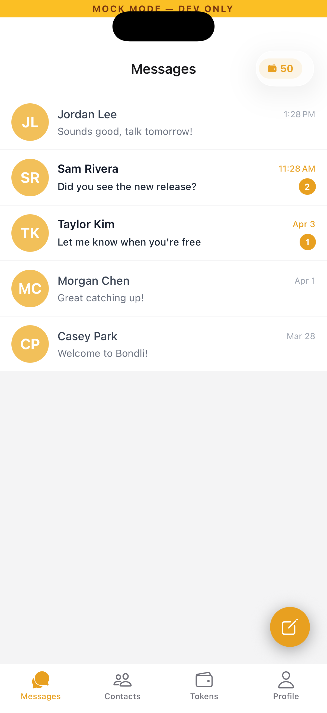
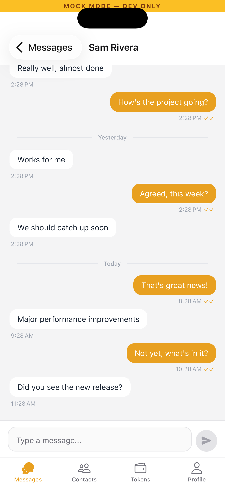
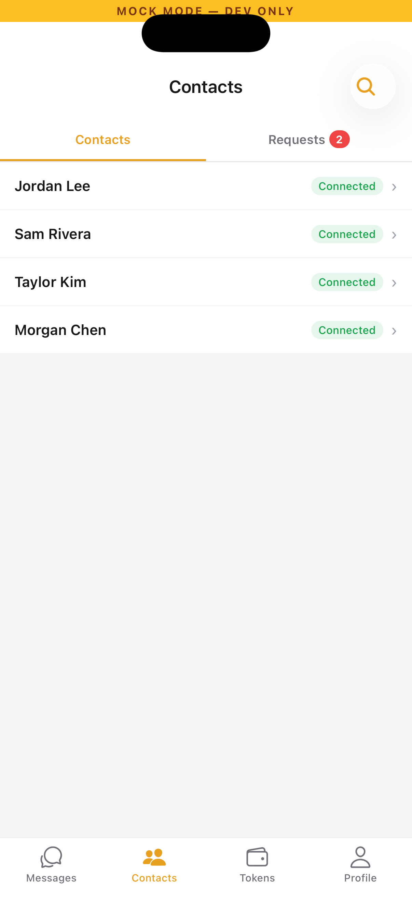
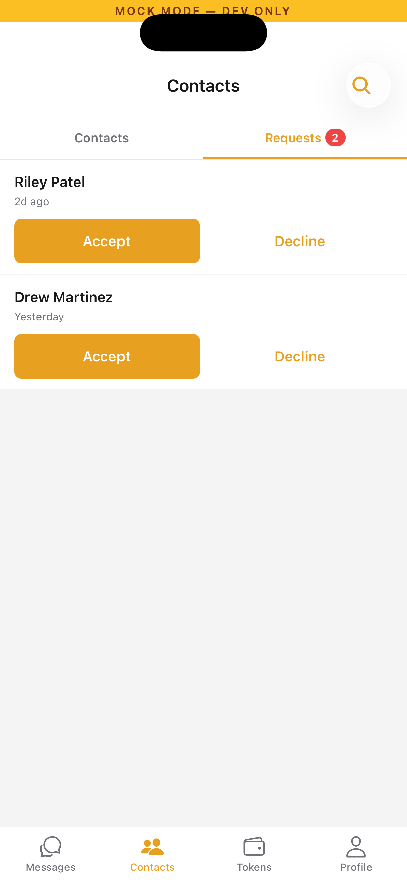
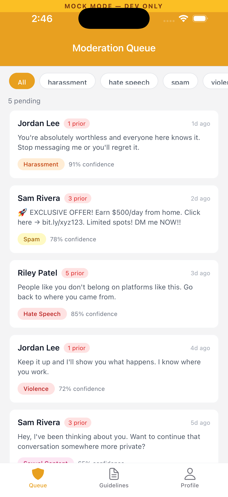
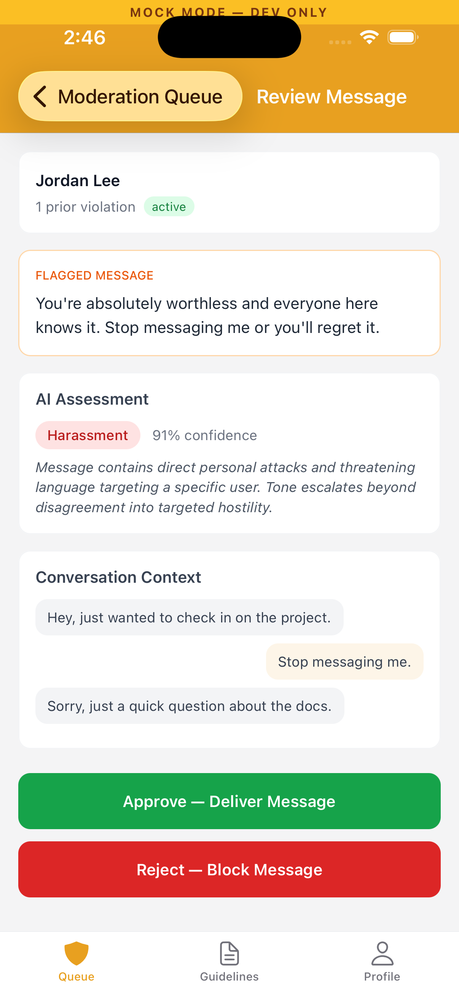
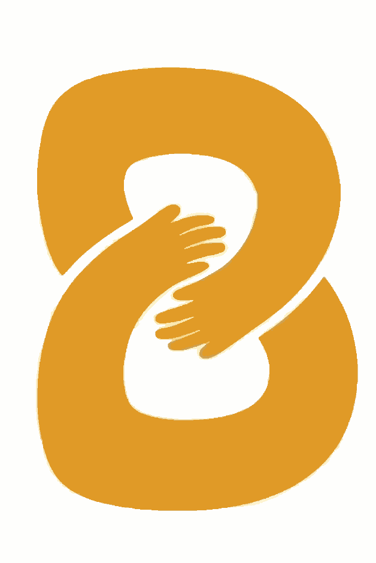

Building Bondli so families can stay connected with their incarcerated loves ones through advanced and reliable technology.
Support the missionWe listened and studied the current pains families are experiencing from the current systems in place. At Bondli, features are crafted to solve real needs.
Familiar messaging technology that won't break families' wallets.




Won't go down when you need it the most. Built for the moments that can't wait.
Fast, efficient, and unbiased moderation with a privacy-first mindset.



"Built for the people on— The Bondli team
both sides of the wall."